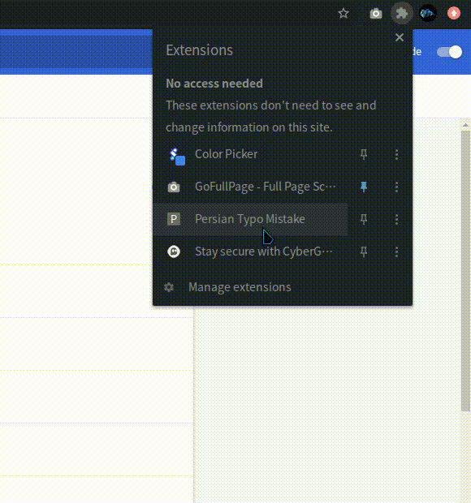

مشکل تایپ متن فارسی
واسه خیلیامون پیش اومده که موقع تایپ کردن یادمون رفته زبان کیبوردمون رو عوض کنیم و وقتی تایپ کردنمون تموم شده
دیدیم اشتباه شده و معمولا پاک کردن و از اول نوشتنش رو مخ هممون هست.
برای حل این مشکل میتونید با این افزونه متن رو به فارسی تبدیل کنید.
این اکستنشن قابلیت اینو داره که متن انگلیسیای رو هم که با کیبورد فارسی نوشته شده رو بازیابی کنه.
دمویی از افزونه

پست معرفی افزونه در لینکدین و پرسش و پاسخ درمورد افزونه